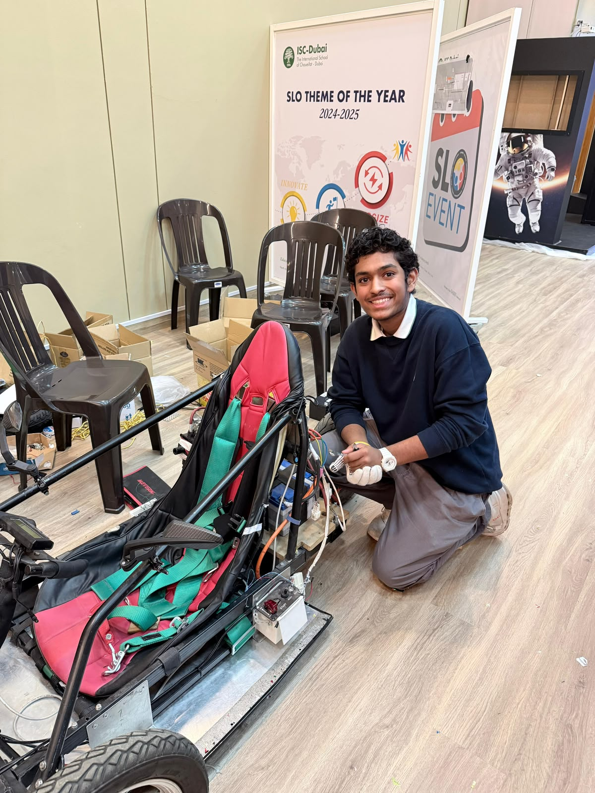
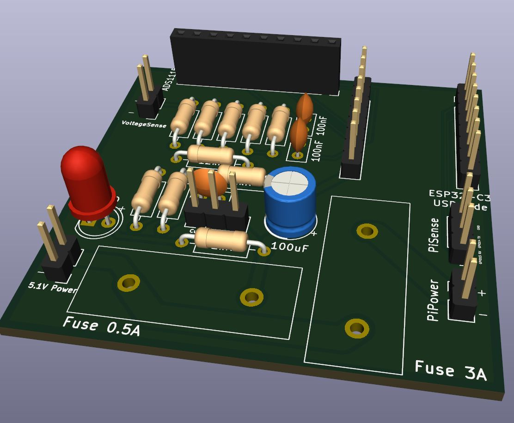
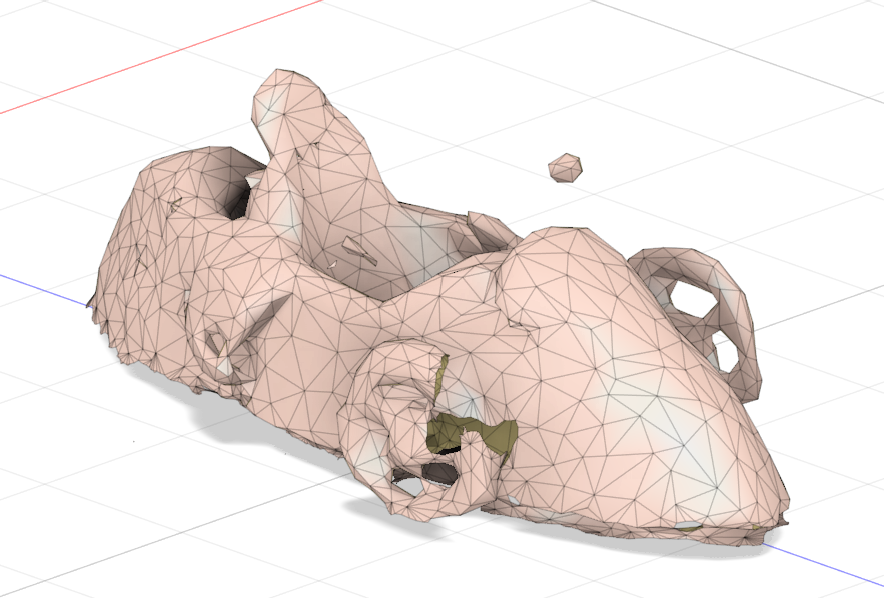
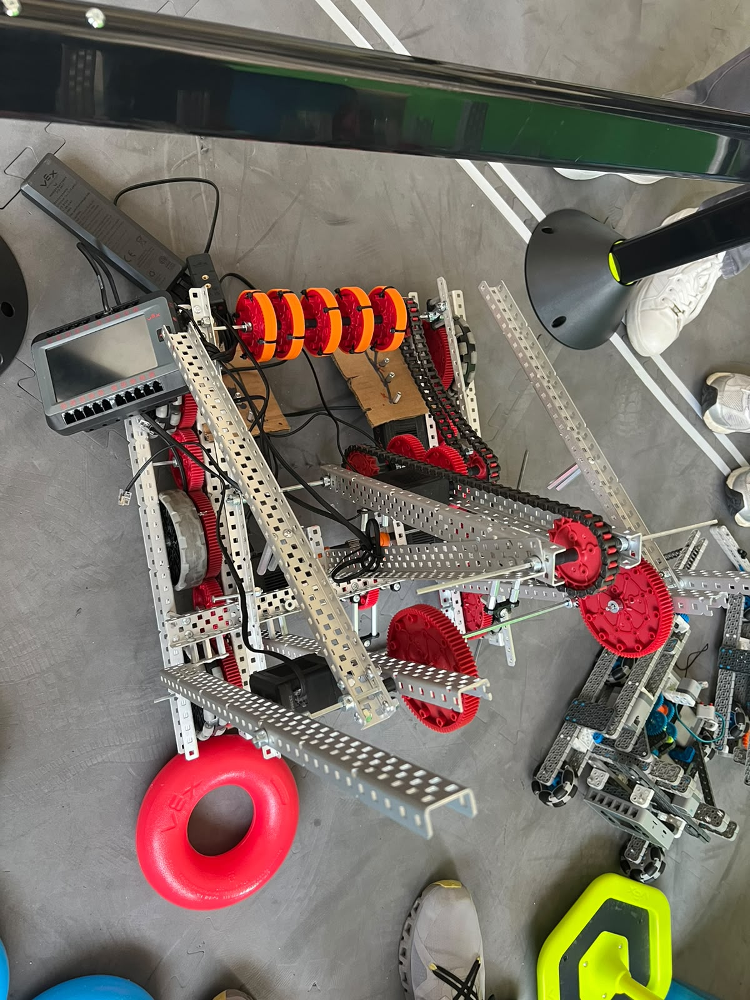
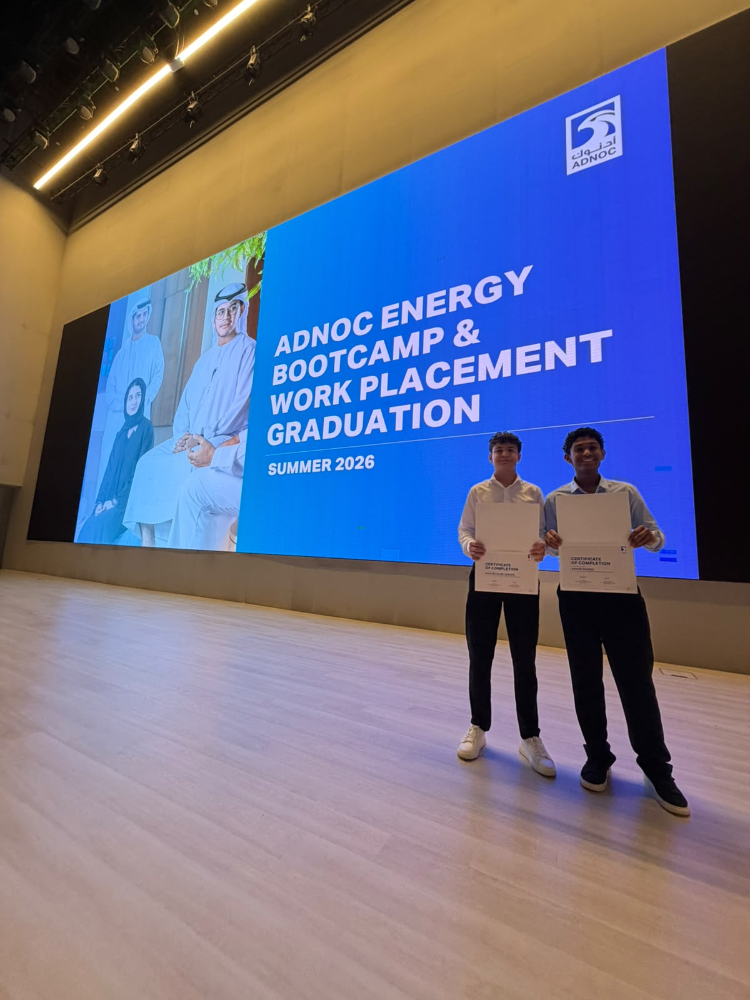
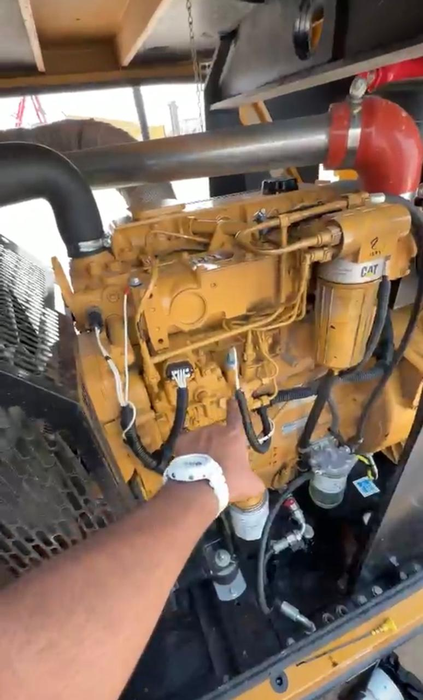
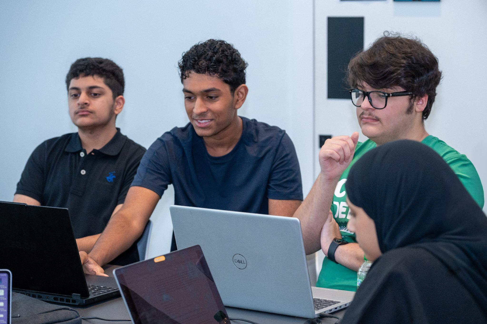

AAHAD RASHID / DUBAI, UAE
Build. Measure.
Improve.
I’m an aspiring electrical engineer working on electric vehicles, telemetry, robotics and applied design. This is a record of what I built, tested and learned.

SELECTED CASE STUDIES
Engineering in the details.
Start with the projects that best show my process, decisions and hands-on work.
EV Grand Prix Electric Race Car
An electric endurance car built and raced through electrical integration, telemetry, design, testing and team leadership.
Explore case study
03 / BUILD LOGEV Telemetry System
Vehicle measurement work and a finalized ESP32-C3 / Raspberry Pi architecture planned for the 2027 car.
Explore case study
04 / BUILD LOGEV CAD & Reverse Engineering
Turning a physical race car into digital geometry for packaging, modelling and design review.
Explore case study
12 / BUILD LOGVEX V5 High Stakes Robotics
Leading a seven-member team through VEX V5 design, construction, programming and field testing.
Explore case studyINSIDE THE RACE CAR
One vehicle.
Connected systems.
My EVGP work is easiest to understand as a set of linked engineering problems. Open a subsystem for the design, the practical work and the evidence.
Read the vehicle overviewThe 48 V system, protection path and repair work.
02 / SUBSYSTEMTelemetryVehicle measurements and the finalized 2027 design.
03 / SUBSYSTEMDigital modelA scanned car translated into working geometry.
04 / SUBSYSTEMDesign & testingPackaging, airflow study and repeatable checks.
2026 COMPETITION RESULTS
Recognition backed by the work.
At the Electric Vehicle Grand Prix in Karting Town, Sharjah, the team earned four awards. The car also placed third overall at the separate 2026 SABIS STEAM competition at SIS Yas Island, where it was highest ranked in the Unmodified category.
View awards and certificates- 02Best Use of AI for Race Strategy
- 03Promotion & Outreach
- 03Social Media Outreach
- 01Best Photo
BEYOND THE BUILD
Learning across environments.
Industry placements and an applied AI program added different ways to observe, test and communicate technical work.

06 / BUILD LOGADNOC Energy Bootcamp and Work Placement
Industry exposure to oil and gas operations, laboratory testing, safety and quality control.
Explore case study
08 / BUILD LOGQER Generator Repair Internship
Hands-on learning in generator maintenance, electrical and mechanical components, testing and fault diagnosis.
Explore case study
07 / BUILD LOGMBZUAI Hybrid Intelligence Bootcamp
Applied AI learning and an accessible learning website for children with disabilities.
Explore case studyABOUT ME
Curiosity with a test plan.
I’m interested in the point where electrical, mechanical and software systems meet. I like taking a problem from research and calculations to wiring, code or CAD, then checking the result against real behavior.
My strongest lessons came from faults, revisions and team work: tracing a broken power path, improving a signal, refining a robot mechanism and explaining a technical decision clearly.
Explore my skills- 01Understand the constraint
- 02Build or model a solution
- 03Measure what happens
- 04Revise and verify
CONTACT
Let’s talk engineering.
For university programs, internships and technical collaboration.